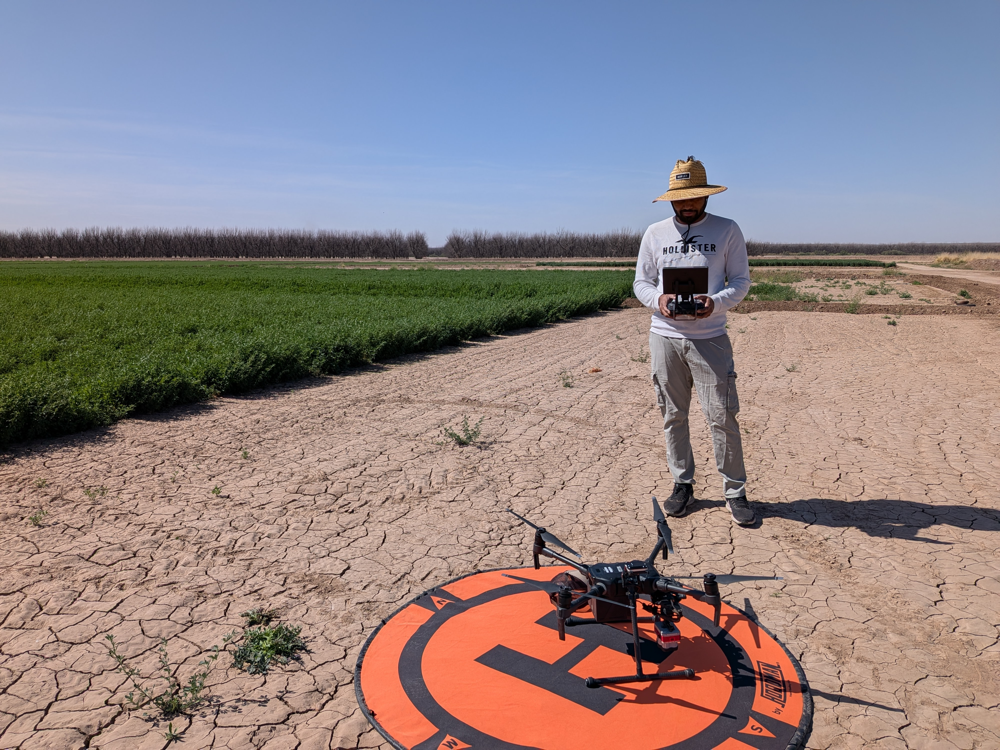

Decoding dryland landscapes — pixel by pixel.
I map shrub encroachment across global drylands using remote sensing,
deep learning, and multi-sensor fusion.
I am a PhD Candidate in Geography and Environmental Studies at New Mexico State University, where I work with Dr. Michaela Buenemann at the Spatial Application Research Center (SpARC). My research sits at the intersection of remote sensing, machine learning, and dryland ecology.
My dissertation focuses on developing novel deep learning and multi-sensor approaches — including hybrid CNN-MLP architectures and attention-based fusion networks — to map and monitor shrub/woody plant encroachment in arid and semi-arid ecosystems. I work extensively with Sentinel-1, Sentinel-2, NAIP, and PlanetScope imagery, and I conduct field campaigns as an FAA-certified remote pilot using UAS platforms and spectroradiometers.
Before NMSU, I earned my MSc from the Faculty of Geo-Information Science and Earth Observation (ITC) at the University of Twente, The Netherlands, and interned at the German Aerospace Center (DLR) in Munich.

My dissertation comprises four interconnected studies on mapping shrub encroachment — from classification to fractional cover to phenological timing.
A systematic review of advances in remote sensing-based mapping of shrub/woody plant encroachment across global drylands — synthesizing sensors, methods, and knowledge gaps from pixels to landscapes.
images/paper1-fig.png
A novel hybrid CNN-MLP deep learning framework for accurately classifying photosynthetic vegetation (PV), non-photosynthetic vegetation (NPV), and bare soil in UAS hyperspectral imagery of mesquite-encroached rangelands at the Jornada Experimental Range.
images/paper2-fig.png
An attention-based fusion CNN that integrates Sentinel-1 SAR and Sentinel-2 multispectral data for percent cover mapping of shrubs at landscape scale, using classification outputs from Paper II as reference data.
images/paper3-fig.png
Examining how multi-temporal satellite time-series data can reveal the optimal phenological window for distinguishing shrub species and cover fractions — leveraging seasonal dynamics to maximize mapping accuracy.
images/paper4-fig.png
images/field-1.jpgimages/field-2.jpgimages/field-3.jpgFrom pixels to landscapes: Advances in remote sensing-based mapping of shrub encroachment in global drylands
Review manuscript — to be submitted
A hybrid CNN-MLP approach for classifying photosynthetic vegetation, non-photosynthetic vegetation, and soil in mesquite-encroached rangelands
Research manuscript — to be submitted
Sentinel-1 and Sentinel-2 data fusion with an attention-based CNN for fractional cover mapping of shrubs in drylands
Research manuscript — to be submitted
Assessing spatial variability of Boro rice (Oryza sativa L.) phenology across different climatic zones in Bangladesh using Sentinel-1 and -2 time series data
Agricultural Research, 1–24.
Integrating field camera imagery for monitoring maize phenology, biophysical traits, and agroclimatic factors in smallholder farms
Computers and Electronics in Agriculture, 240, 111161.
Water, sanitation, and hygiene conditions and health outcomes: A comparative study between Rohingya refugees and local people in southeastern Bangladesh
The Dhaka University Journal of Earth and Environmental Sciences, 13(1), 47–58.
Spatiotemporal changes of vegetation and land surface temperature in the refugee camps and surrounding areas of Bangladesh after the Rohingya influx from Myanmar
Environment, Development and Sustainability, 23, 3562–3577.
DOI ↗Variability of wheat phenology from Sentinel-1 and -2 time series: A case study for Brandenburg, Germany
MSc Thesis, University of Twente, Enschede, The Netherlands.
I believe in hands-on, tool-driven GIS education. I currently serve as Instructor of Record for two courses at NMSU and have supported graduate teaching across several courses since 2023.
An introductory undergraduate course covering cartographic principles, geographic information systems, and the broad applications of GIS across disciplines — from ecology to urban planning. Students gain hands-on experience with industry-standard tools.
One-on-one mentorship guiding an undergraduate student through GIS fundamentals and applied spatial analysis, with a focus on practical workflows and project-based learning.
Responsibilities include grading, technical troubleshooting, software support, and student mentorship across undergraduate and graduate courses.
My full academic CV covers my research experience, teaching, publications, conference presentations, awards, and technical skills.
Download CV (PDF) ↓Last updated: March 2026